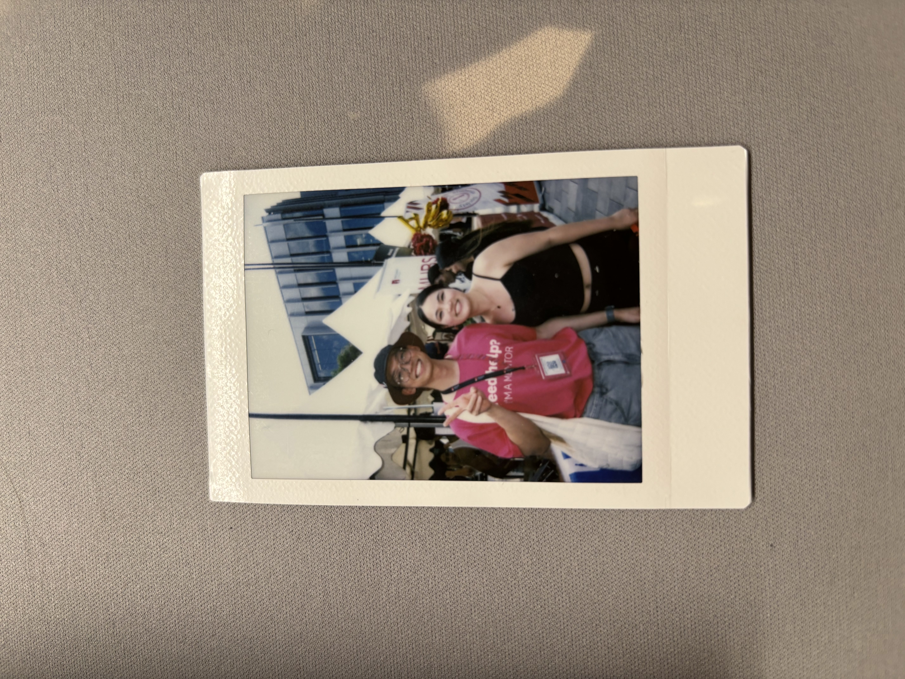

anh cũng k biết mình nên bắt đầu bức thư này như thế nào.. thoi thì bắt đầu đại từ một chỗ nào đó z..
Hôm nay anh có nghe được một chiếc podcast nói về việc to break up or make up, và trong podcast đó có một câu chuyện khá là giống tụi mình. Cặp đôi đó cũng có tính cách hoàn toàn trái ngược nhau, và mặc dù mối quan hệ của 2 bạn đó rất tốt, bạn nam cũng có suy nghĩ muốn dump bạn nữ. Vấn đề ở đây là, ban nam bị ovtk và nghĩ quá nhiều về tương lai. Nó khiến anh suy nghĩ, rằng việc mình bỏ em mà đi có thật sự là đúng đắn không.. bây giờ nhìn nhận lại, mối quan hệ của tụi mình vốn dĩ chưa bao giờ tới mức không hề cứu vãn được như z, chẳng qua chỉ do những nỗi sợ vô hình của anh đã khiến cho anh chùn bước không muốn bước tiếp cùng em thôi.. vậy mà giờ đây khi vừa buông tay em ra anh đã liền cảm thấy thiếu thiếu rồi..
Lần trước em có nói là từ lâu rồi những lời động viên của em không còn chạm tới anh nữa. Anh nghĩ là nó vẫn luôn chạm hả, bởi vì anh nhận ra là phần lớn động lực của anh từ việc đi tập gym tới việc học giỏi đi làm nhìu tiền đều đến từ việc muốn em vênh mỗi khi em khoe anh thôi.. bây giờ anh có 3 công việc rồi, lương kiếm đủ để có thể cover cả tiền học phí, và có thể có thêm một xíu tiền tiết kiệm để mua cho em những món em thích, nhưng mà bây giờ anh không còn ai để khoe và để celebrate nữa hết.. Đúng là như em đã nói thật, bây giờ anh không còn ai để chia sẻ niềm vui của mình nữa rồi..
Sorry for having seen you as an option whereas I should have treasured you for life.. kiếm được một người luôn luôn ủng hộ anh thật sự là không dễ, nhma anh đã từng take it for granted. Có lẽ, sai lầm lớn nhất của anh là anh nghĩ anh có thể kiếm được một người khác có thể treat anh tốt như em.. Người mới thì đúng là vui thật, đúng là cuốn thật, nhưng mà anh nhớ cái cảm giác dễ chịu mỗi khi được ôm em, được nghe về một ngày của em như thế nào, được em nấu ăn cho.. những thứ đơn giản mà anh đã từng take for granted như z, lại là những thứ khó kiếm nhất trong một mối quan hệ, vậy mà anh lại không biết trân trọng..
Dạo gần đây anh cũng hay nhìn lại những bức hình cũ của tụi mình hả.. và cả tấm polaroid mà em đã từng vứt vào thùng rác nữa.. đúng là we keep this love in a photograph mà.. cảm ơn em vì những kỉ niệm đẹp cùng nhau, mặc dù tụi mình không đi chơi quá nhiều. Xin lỗi vì đã luôn bận rộn và không ưu tiên em hơn ạ. Ước gì anh đã dành nhiều thời gian với em hơn.
Dạo gần đây trời cũng có trăng, và nó cũng làm anh nhớ tới ánh trăng bên cửa sổ của phòng mới của em. Cũng cùng là ánh trăng đó, vậy mà giờ đây anh không còn em nữa..
Xin lỗi vì những lần đã cáu giận với em, xin lỗi vì những lần đã làm em tổn thương. Cảm ơn em vì đã đến, đã luôn ủng hộ anh trong mọi quyết định của anh, đã cho anh biết như thế nào là được yêu thương, và đã từng là favorite person của anh nữa. Anh biết những lời này đều là những lời thú tội muộn màng.. Xin lỗi vì đã làm em tổn thương quá nhiều.. Đúng là chỉ khi mất đi rồi anh mới biết em quan trọng với anh như thế nào mà.. I don’t dare to ask for another chance, but I just wanna say, next time I will definitely treat you right, and love you with all of what I have. But.. whoever get a second chance to make up all of the mistakes.. This is life, and I will have to accept that I have abandoned the person who loved me the most.. Maybe in a different universe we can be happy together.
Bức thư này có vẻ hơi dài, cám ơn em vì đã đọc hết tới đây ạ. Anh cũng chả biết mình viết lá thư này để làm gì cả, nhưng mà đọc xong rồi thì em cứ quên nó đi nha.
Người đã từng yêu em rất nhiều.
